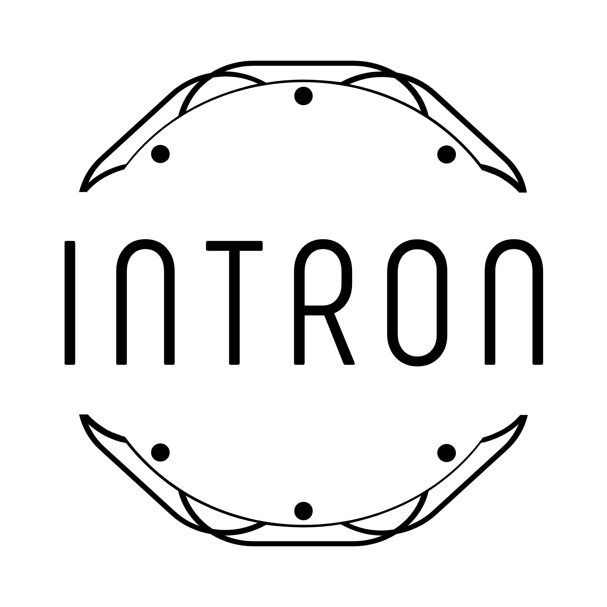
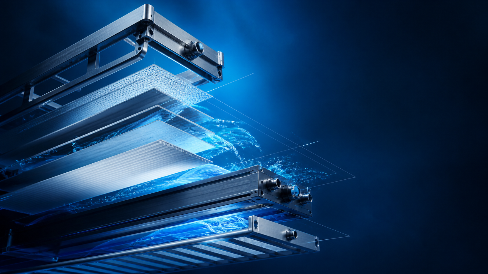

Quality-led sourcing
Products sourced to meet global quality standards

INTRONGLOBALGLOBAL SOURCING · IMPORT · EXPORT
We connect manufacturers and customers through global sourcing, import, export and distribution of high-performance fibers, engineering resins and functional additives.
Global product
sourcing
Quality checks
& supply coordination
Import, export
& distribution
ABOUT US
INTRON GLOBAL is a trading company specializing in the import, export and distribution of high-performance fibers for composites, engineering plastics, functional additives, and water treatment equipment and components.
We work with chemical and materials manufacturers to source the products our customers need. We check product quality and supply conditions, and coordinate reliable supply to domestic and international markets.
Our global reach →Products sourced to meet global quality standards
OCF, Lotte Chem, Samyang EP, Formosa, Nan Ya and more
Recycled resins & PFAS-free solutions
PRODUCTS WE TRADE
We source products from domestic and international manufacturers and supply them through import, export and distribution.
MATERIALS
We source and supply glass fibers, carbon fibers and resins to domestic and international customers.
PERFORMANCE
We source and supply additives and modifiers to improve plastics performance.
EQUIPMENT SUPPLY
We source and supply water treatment equipment and components suited to the intended operating conditions.

INTRON
TRADING
WATER TREATMENT EQUIPMENT SUPPLY
We trade and supply frame cassette systems with corrosion resistance and structural stability for demanding underwater environments, sourcing equipment and components to suit customer requirements.
GLOBAL NETWORK
Our trading network connects suppliers and customers across the EU, UK, Turkey, the Middle East and Korea.
European market distribution
Eurasian industrial hub
Strategic regional supply
Headquarters & domestic distribution